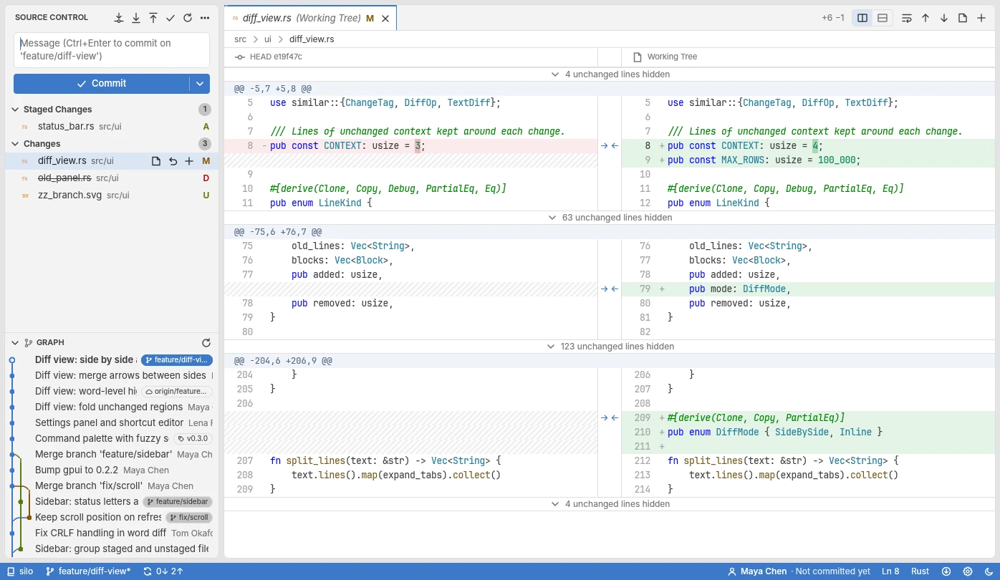
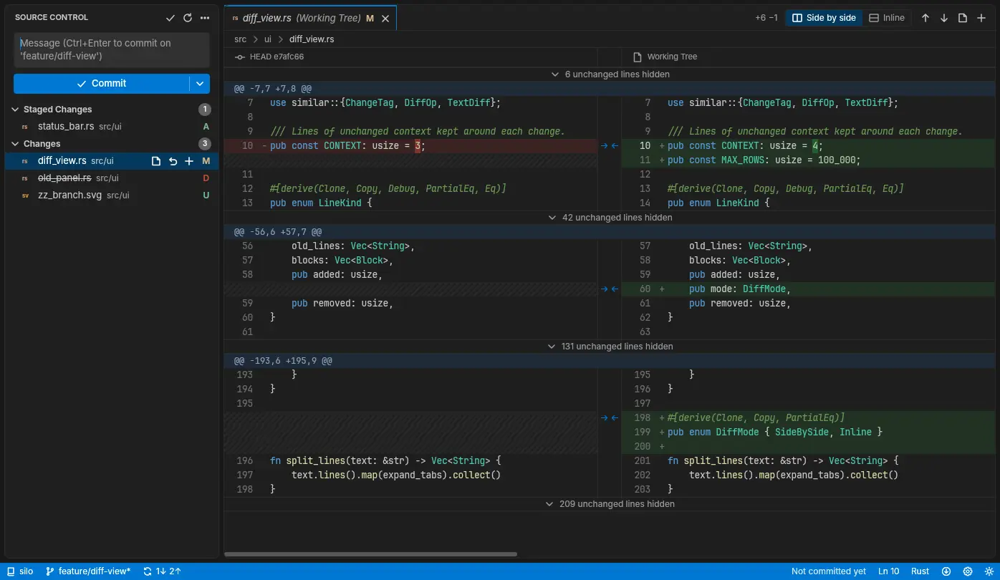

A fast Git desktop client. Review your changes, stage them, commit. Nothing else.
Free for macOS, Windows and Linux.


Side by side or inline, with word-level highlights and unchanged lines folded away.
Stage files or whole groups, commit, amend, or commit and push in one step.
Copy a change from one side to the other with the merge arrows, then save.
Switch or create branches, then fetch, pull and push from the status bar.
Every git command is in the command palette, and every shortcut can be changed.
A native Rust app drawn on the GPU, light on memory. Uses your own git, hooks and signing.
Drift needs git installed. It tells you when a new version is out.
git clone https://github.com/rk-kabilan/drift
cd drift
cargo run --release